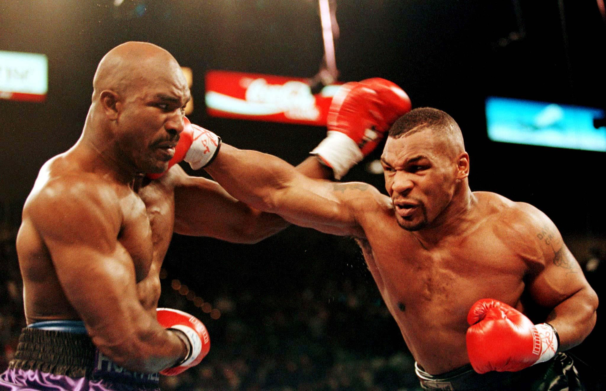

Boksing har sine røtter fra Egyptiske hærer. Soldatene ble opptrent i hånd til hånd kamp, slik at de ville ha en fordel på felten. Vi har også sett tendenser til boksing i antikken samt vikingtiden.
Boksing tar plass i en kvadratisk ring som regel på 5x5m. Kampene er i amatørboksing delt opp i 3 minutter, 1 minutt pause og 3 runder. Samme prinsippet er det for proffboksing, bare at rundene er økt, helt opp til 12
Tyson sin dårlige oppførsel fikk han bortsendt til «Tryon School for Boys». Hvor han møtte Bob Stewart, en tidligere amatørbokser seierherre. Etter at Bob hadde lært bort alt han kunne, overleverte Bob unge Tyson til managerlegenden «Cus D’Amato». Slik at Mike kunne, i Cus’s egne ord bli «Heavyweight Champion of the World».